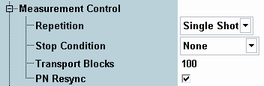

The "Measurement Control" parameters configure the scope of the measurement.
See also: "Statistical Settings"

Defines how often the measurement is repeated if it is not stopped explicitly or by a failed limit check.
- Continuous: The measurement is continued until it is explicitly terminated. The results are periodically updated.
- Single-Shot: The measurement is stopped after one statistics cycle.
Single-shot is preferable if only a single measurement result is required under fixed conditions, which is typical for remote-controlled measurements. Continuous mode is suitable for monitoring the evolution of the measurement results in time and observe how they depend on the measurement configuration, which is typically done in manual control. The reset/preset values therefore differ from each other.
- "None": The measurement is performed according to its transport blocks, irrespective of the limit check results.
- "On Limit Failure": The measurement is stopped when one of the limits is exceeded. If no limit failure occurs, it is performed according to its transport blocks settings. Use this value for measurements that are intended for checking limits, e.g. production tests.
Defines the number of transport blocks to be measured per measurement cycle (statistics cycle). The number of transport blocks sent can be larger than the specified value because transport blocks can be lost on the way to the UE and back.
See also: "Statistical Results"
Activates a correction mechanism for the order of looped back transports blocks. The setting is relevant in the case that the UE eliminates or reorders some of the received blocks carrying an irregular bit pattern, in particular a PN sequence (PRBS). The main purpose of the setting is to check whether a high BER actually results from a reordering of blocks by the UE.
- ON: The R&S CMW checks the BER within each individual received block and corrects its PN phase and its position in the block sequence, if necessary. The BER measurement result is based on the bit stream of the corrected block sequence. It can be zero although the UE has eliminated or reordered some blocks. The number of corrected blocks is displayed as measurement result "PN Discontinuity".
- Off: The received block sequence is not corrected. No "PN Discontinuity" result is provided.